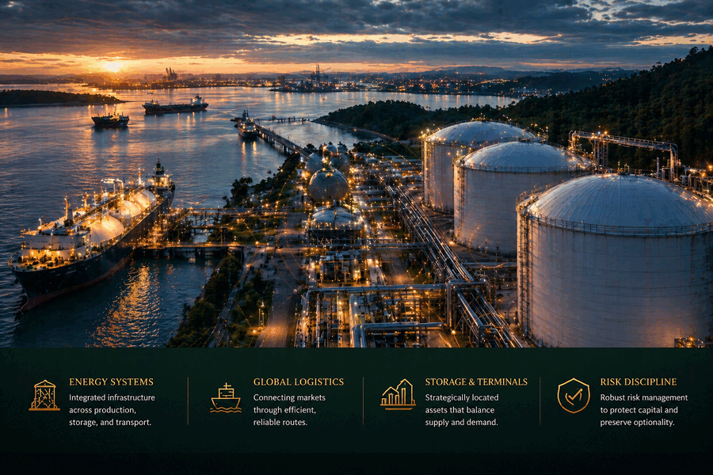
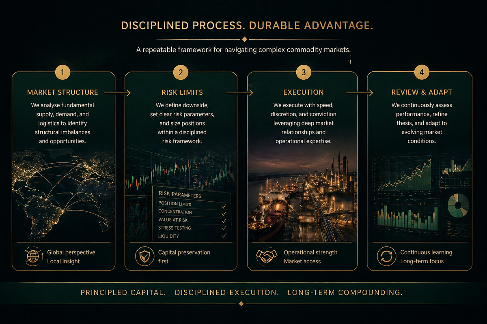

Energy
Primary coverage where storage utilization, pipeline and freight constraints, regional demand shifts, inventory behavior, and delivery routes can be monitored directly.

Primary coverage where storage utilization, pipeline and freight constraints, regional demand shifts, inventory behavior, and delivery routes can be monitored directly.

Primary coverage where crop cycles, weather-linked yield risk, processing throughput, export timing, freight availability, and storage conditions shape basis and spread behavior.
Energy Review
Energy review emphasizes observable physical constraints rather than broad commodity forecasts. The firm looks for conditions where route capacity, storage behavior, and delivery optionality can be tested against a defined downside case.
Storage utilization, draw patterns, refill timing, and regional inventory stress are reviewed for evidence of scarcity, congestion, or normalization.
Pipeline availability, freight constraints, terminal access, and alternative delivery routes are assessed before exposure depends on physical movement.
Local demand shifts, weather-sensitive load, infrastructure outages, and basis behavior are considered where they affect realizable pricing and settlement quality.
Agriculture Review
Agriculture review connects seasonal production risk with the operating path from field to storage, processing, export, and settlement. Exposure is considered only where timing, capacity, and documentation can be evaluated directly.
Planting progress, growing conditions, harvest timing, and weather-linked yield risk are reviewed alongside the assumptions that would invalidate a position.
Elevator capacity, crush or milling throughput, storage availability, and quality constraints are assessed where they influence local pricing and movement.
Rail, truck, barge, port, and vessel timing are reviewed where freight capacity or export windows can alter basis, spreads, or delivery reliability.
Secondary sectors remain subordinate and are considered when they alter route economics, operating access, collateral quality, delivery reliability, or exposure resilience.
Freight, terminal capacity, and routing constraints are monitored where they determine physical delivery.
Coverage is selective when metals dynamics influence adjacent industrial commodity demand or financing conditions.
Assessed where asset access and local operating capability improve control, timing, or execution reliability.